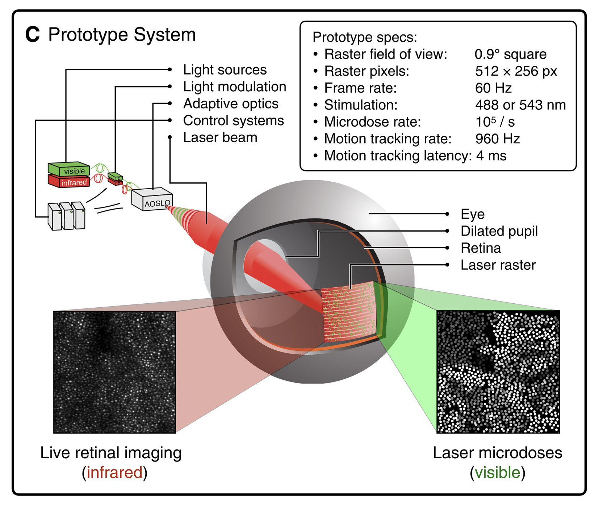
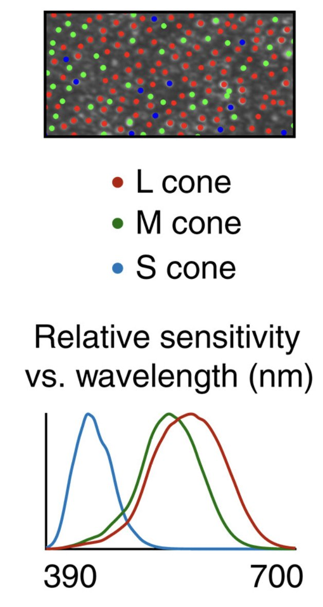
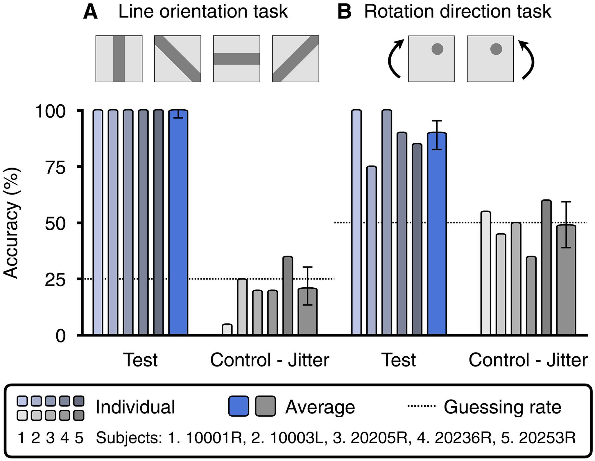
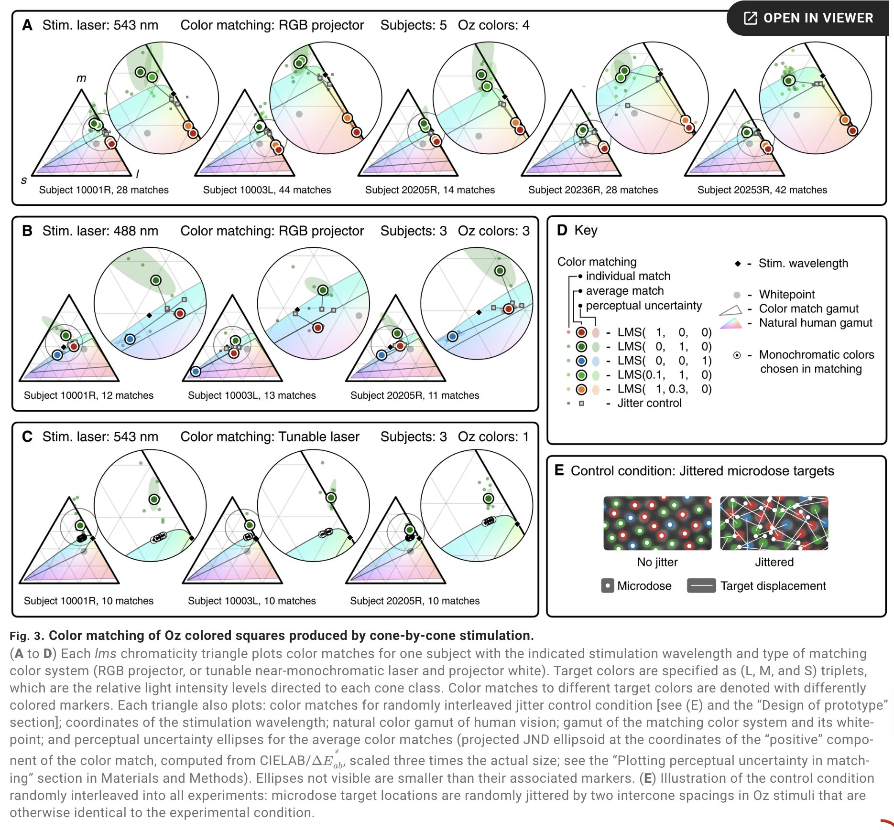

A New Color
This is one of craziest papers I’ve ever read.
They made a new color by using a laser to individually stimulate particular cells in your eyes.
Apparently it looks like an impossibly saturated teal, but you can’t know what it looks like without experiencing it directly.

Human color vision isn’t a direct mapping from light’s wavelength. Instead, we have 3 types of cells (called cones) that fire at different rates depending on the wavelength. But their sensitivities overlap—the L and M cones in particular heavily overlap.

This means that if light is hitting your whole retina, it is always going to activate the red and green cones (just at slightly different rates). This is fine for us to distinguish between different wavelengths, because we use the ratio between cone activation rates.
But it also means that normally, your red and green cones (L and M) are always both firing (just at somewhat different rates).
But what happens if you just trigger green (M) cones? You should see a color that’s impossible to normally see.
This is hard because your eye moves, you have to target just the M cones very precisely, and a bunch of other reasons. But they made it work, and confirmed experimentally that it was actually a novel color, outside the normal gamut. They call it ‘olo’.
How do we know their system works? First, they have tasks where the only way subjects could distinguish between the foreground (red line / rotating dot) and background (olo) is if their cone targeting works. When they add noise to the targeting, everyone fails (as expected).

But they also do a “color-matching” experiment. Here, participants try to match olo with a color NOT produced by their laser system (i.e. “natural” light). The only way they were able to do this was by desaturating olo. Why does that matter?

The natural light they were matching olo against was monochromatic, i.e. formed from only one wavelength. This type of light is already maximally saturated, if its shown to the whole retina instead of targeted to individual cones.
So the only way that desaturating olo would cause it to match with their reference color, is if olo lies outside of the normal gamut of color we can see.
This is so cool!!
Full paper: https://www.science.org/doi/10.1126/sciadv.adu1052
FYI I’m not an expert so please fact check me!